|
|
|
|
|
|
|
|
You can align one or more selected objects with the Align tools included in the Arrange menu.
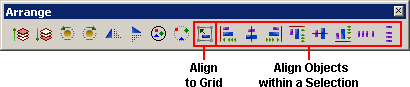
Align One or More Objects to Grid
You can use the Arrange menu's Align to Grid tool to align the top-left corner of a selected object or to align the selection box of multiple objects to its nearest (x,y) grid points.
Align Multiple Objects within a Selection
You can use the Arrange menu's Align within a Selection tool to align the top-left corner of all selected objects relative to the selection area—to the left, center, right, top, middle, bottom, spaced horizontally, or spaced vertically.
SnapTo Grid property setting
You can align all objects globally with the SnapTo Grid setting in either the Graphical Panels or Popup Windows property settings.
For more information about the SnapTo property, see Section 4.9.3, Setting the Grid or Chapter 15, Popup Windows.
The following operations can also be performed with their corresponding Arrange menu items or their Arrange toolbar icons.
Select and right-click an object (or a selection of multiple objects) that you want to align to the grid.
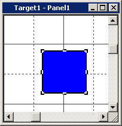
In the right-click menu, point to Align and click To Grid.
The top-left corner of the selected object (or the multiple objects' selection box) moves to the nearest (x,y) grid point on the panel.
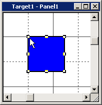
Select more than one object that you want to align to the left side of the selection box.
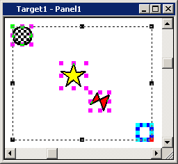
Right-click any one of the objects within the selection box, then point to Align and click Left.
All objects move horizontally to the left side of the selection box.
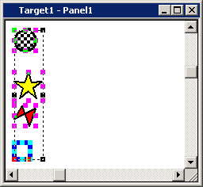
Select more than one object that you want to align to the center of the selection box.
Right-click any one of the objects within the selection box, and in the right-click menu, point to Align and click Center.
All objects move horizontally to the center of the selection box.
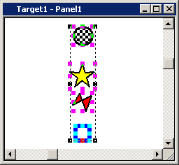
Select more than one object that you want to align to the right side of the selection box.
Right-click any one of the objects within the selection box, and in the right-click menu, point to Align and click Right.
All objects move horizontally to the right side of the selection box.
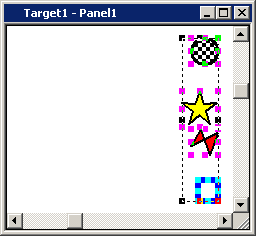
Select more than one object that you want to align to the top of the selection box.
Right-click any one of the objects within the selection box, and in the right-click menu, point to Align and click Top.
All objects move vertically to the top of the selection box.
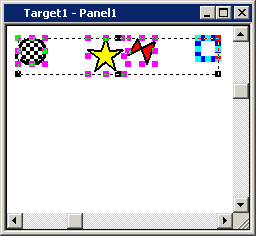
Select more than one object that you want to align to the middle of the selection box.
Right-click any one of the objects within the selection box, and in the right-click menu, point to Align and click Middle.
All objects move vertically to the middle of the selection box.
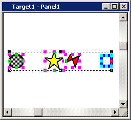
Select more than one object that you want to align to the bottom of the selection box.
Right-click any one of the objects within the selection box, and in the right-click menu, point to Align and click Bottom.
All objects move vertically to the bottom of the selection box.
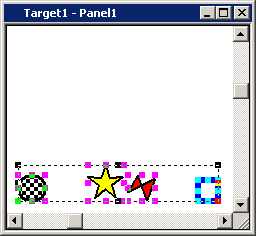
Select more than one object that you want to align within the width (horizontal space) of its selection box.
Right-click any one of the objects within the selection box, and in the right-click menu, point to Align and click Space Horizontal.
All objects between the leftmost and rightmost objects move horizontally and are evenly spaced within the width of the selection box.
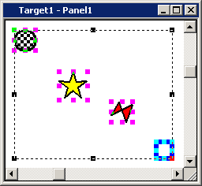
Select more than one object that you want to align within the height (vertical space) of its selection box.
Right-click any one of the objects within the selection box, and in the right-click menu, point to Align and click Space Vertical.
All objects between the topmost and bottom objects move vertically and are evenly spaced within the height of the selection box.
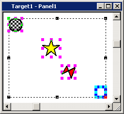